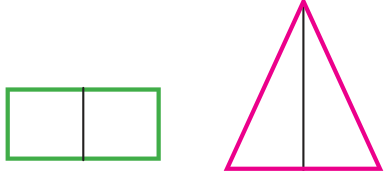
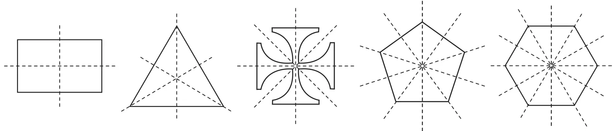
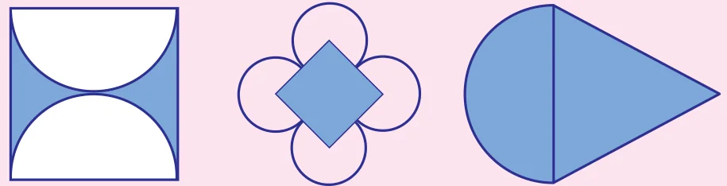
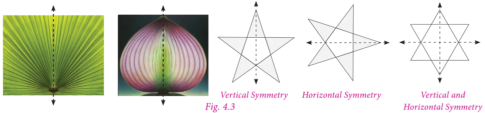
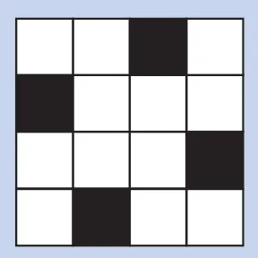
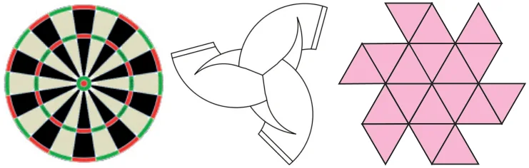
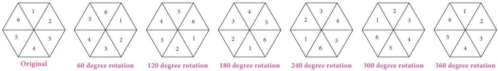
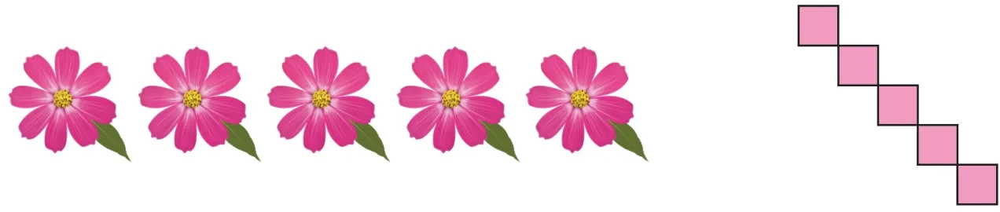
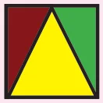

Chapter
GEOMETRY
4
Learning Objectives
- To recall the types of symmetry through diagrams.
- To learn symmetry through transformation (Translation, reflection and rotation).
- To construct circles and concentric circles.
Recap
In class VI we have learnt the concept of symmetry. Now we shall recall them.
Line of Symmetry
Look at the Fig. 4.1 given on the right.

In each figure a line divides the figure into two identical halves. Such figures are symmetrical about the line. The line that divides any figure into two equal halves such that each half exactly coincides with the other is known as the line of symmetry or axis of symmetry.
A figure may have one, two, three or more lines of symmetry. Some figures which has lines of symmetry are shown in Fig. 4.2.

Try these
- Can you draw a shape which has no line of symmetry?
- Draw all possible lines of symmetry for the following shapes.

Think
What can you say about the number of lines of symmetry of a circle?
Reflectional symmetry
When an object is seen in a mirror, the image obtained on the other side of the mirror is called its reflection.
An object and its mirror image are perfectly identical to each other. The left and right sides of an object appear inverted in the mirror. The object and its reflection image show mirror symmetry. The mirror line here is the line of symmetry. Mirror symmetry is called reflectional symmetry.
The following shapes are examples of reflectional symmetry.

The reflected shape will be exactly the same as the original, the same distance from the mirror line and the same size. While dealing with mirror reflection, care is needed to note down the left-right changes in the orientation.
Try these
- Reflect the words CHEEK, BIKE, BOX with horizontal line.
- Reflect the following words with vertical line.
- M
A
T
H - M
O
M - T
H
A
T
- M
Think
Will the figure be symmetric about both the diagonals?

Do You Know?
The work of artist Leonardo da Vinci has an unusual characteristic. His hand writing is a mirror image of normal handwriting.
Rotational Symmetry
An object is said to have a rotational symmetry if it looks the same after being rotated about its centre through an angle less than \(360^{\circ}\).
When an object rotates around a fixed axis if its appearance of size and shape does not change then the object is supposed to be rotationally symmetrical.
Rotational symmetry can be observed in the following Fig. 4.4

The minimum angle of rotation of a figure to get exactly the same figure as original is called the angle of rotation.
The total number of times a figure coincides with itself in one complete rotation is called the order of rotational symmetry. We can only rotate the figure up to 360 degrees.

It is important to understand that all figures have rotational symmetry of order 1, as can be rotated completely through \(360^{\circ}\) to come back to its original position. So we say that an object has rotational symmetry, only when the order of symmetry is more than 1. So, 2 is the smallest order of rotational symmetry.
Try these
- Find the order of rotational symmetry of the following figures.
- Find the order of rotational symmetry for an equilateral triangle.
Think
Can a parallelogram have a rotational symmetry?
Translational Symmetry
An image has translational Symmetry if it can be divided by straight lines into a sequence of identical figures. Translational symmetry results from moving a figure to a certain distance in a certain direction.
Thus, translation symmetry occurs when a pattern slides to a new position. The sliding movement involves neither rotation nor reflection.

Try this
Using translational symmetry make new patterns with the given figure.
